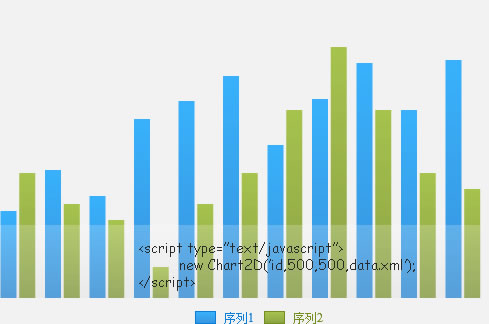
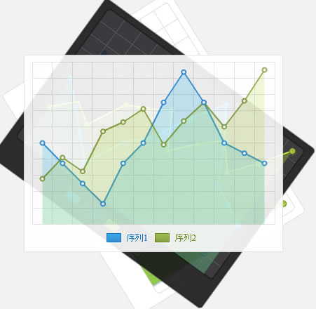

轻盈简单
一张图片的体积，装下数十种交互图表；简单到仅需一句代码便可完成图表的创建；ficharts比任何一款Flash图表的构建都简单，无需记录swf文件位置；多种构建方式，将构建图表过程简化到极致。
组合图表
通过XML灵活定义图表类型，不管是多序列还是不同图表类型的任意组合ficharts都能轻松达成，用精简的配置文件取代冗长的代码，使分析多维数据更简单。

风格多样
内置多种样式，适应多种页面风格；支持自定义样式模板，精确调节每个UI细节，打造属于自己的品味。
多平台支持
可用于web、桌面、移动平台。借助于AIR技术将应用无缝迁移至任何终端。桌面端兼容所有浏览器，移动端可提供app独有的完美体验。